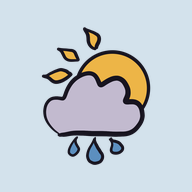

Ellenial Weather
Right now
–°
–
Fetching the forecasts…
High – · low –
Fetching six forecasts and SMHI's measurements…
Going through 35 years of weather…
Usually this week
High / low–
Rainy days–
Sun a day–
Frost
Sunny days
UV
How it's changing